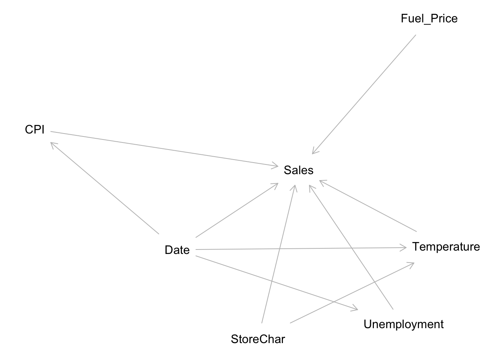

Quarto enables you to weave together content and executable code into a finished document. To learn more about Quarto see https://quarto.org.
Running Code
When you click the Render button a document will be generated that includes both content and the output of embedded code. You can embed code like this:
Step 1 - Loading the libraies
library(tidyverse)
── Attaching core tidyverse packages ──────────────────────── tidyverse 2.0.0 ──
✔ dplyr 1.1.4 ✔ readr 2.1.6
✔ forcats 1.0.1 ✔ stringr 1.6.0
✔ ggplot2 4.0.1 ✔ tibble 3.3.1
✔ lubridate 1.9.4 ✔ tidyr 1.3.2
✔ purrr 1.2.1
── Conflicts ────────────────────────────────────────── tidyverse_conflicts() ──
✖ dplyr::filter() masks stats::filter()
✖ dplyr::lag() masks stats::lag()
ℹ Use the conflicted package (<http://conflicted.r-lib.org/>) to force all conflicts to become errors
library(scales)
Attaching package: 'scales'
The following object is masked from 'package:purrr':
discard
The following object is masked from 'package:readr':
col_factor
library(rio)library(vtable)
Loading required package: kableExtra
Attaching package: 'kableExtra'
The following object is masked from 'package:dplyr':
group_rows
library(fixest)
Attaching package: 'fixest'
The following object is masked from 'package:scales':
pvalue
library(dplyr)library(lubridate)library(multcomp) ## Generalized Linear Hypothesis Test
Loading required package: mvtnorm
Loading required package: survival
Loading required package: TH.data
Loading required package: MASS
Attaching package: 'MASS'
The following object is masked from 'package:dplyr':
select
Attaching package: 'TH.data'
The following object is masked from 'package:MASS':
geyser
Step 2 - Loading the files, EDA and Transformation
# reading the data# As outlined in instructions to avoid the error in reading moving one level up y using ../# dmy(Date) to convert it to correct date format walmart <-read.csv("../raw_data/Walmart_Sales (1).csv") %>%mutate(Date =dmy(Date))str(walmart)
'data.frame': 6435 obs. of 8 variables:
$ Store : int 1 1 1 1 1 1 1 1 1 1 ...
$ Date : Date, format: "2010-02-05" "2010-02-12" ...
$ Weekly_Sales: num 1643691 1641957 1611968 1409728 1554807 ...
$ Holiday_Flag: int 0 1 0 0 0 0 0 0 0 0 ...
$ Temperature : num 42.3 38.5 39.9 46.6 46.5 ...
$ Fuel_Price : num 2.57 2.55 2.51 2.56 2.62 ...
$ CPI : num 211 211 211 211 211 ...
$ Unemployment: num 8.11 8.11 8.11 8.11 8.11 ...
# transforming the variables # Convert store as a binary variable # Convert weekly sales as logs walmart <- walmart %>%mutate ( Year =year(Date),Month =month(Date),YearMonth =floor_date(Date, "month"),Store =as.factor(Store),Holiday_Flag =as.factor(Holiday_Flag),log_sales =log(Weekly_Sales) ) %>%arrange(Store, Date)
Validating if the Panel Data is balanced
dim(walmart)
[1] 6435 12
# Check if the panel data is balanced, i.e each entity i.e store is represented for the same time period N <-n_distinct(walmart$Store)T_per_score <- walmart %>%group_by(Store) %>%summarize(n =n()) %>%pull(n) %>%unique()N*T_per_score ==nrow(walmart)
[1] TRUE
# EDA that informs the model # Distribution of sales (motivation for log transform)ggplot (walmart, aes(x= Weekly_Sales)) +geom_histogram(bins =40) +scale_x_continuous(labels = dollar)+labs(title ='Weekly_Sales are right-skewed -> log(Weekly_Sales) is reasonable',x ="Weekly_Sales", y="Count" )
## Raw relationship: sales vs temperature (possible nonlinearity)ggplot( walmart, aes(x= Temperature, y= log_sales))+geom_point(alpha =0.15) +geom_smooth(method ="loess", se =TRUE)+labs(title ="Raw relationship suggests potential nonlinearity", x="Temperature (F)", y ="log(Weekly_Sales)" )
`geom_smooth()` using formula = 'y ~ x'
Step 3 - Casual Diagram and validation
#Seasonality / time confounding (why we need time fixed effects) walmart %>%group_by(Date) %>%summarize(avg_temp =mean(Temperature),avg_log_sales =mean(log_sales)) %>%ggplot(aes(x = Date)) +geom_line(aes(y= avg_temp)) +geom_line(aes(y= avg_log_sales), linetype ="dashed")+labs(title ="Both temperature and sales move over time → time confounding likely", y="Solid:avg temp| Dashed: avg log sales")
library(dagitty)
Attaching package: 'dagitty'
The following object is masked from 'package:rio':
convert
g <-dagitty("dag { Temperature -> Sales StoreChar -> Temperature StoreChar -> Sales Date -> Temperature Date -> Sales Date -> CPI Date -> Unemployment Fuel_Price -> Sales Unemployment -> Sales CPI -> Sales}")plot(g)
Plot coordinates for graph not supplied! Generating coordinates, see ?coordinates for how to set your own.

DAG implies -
Temperature ← StoreChar → Sales
Temperature ← Date → Sales
These are the two main back-door paths.
## Main regressions (fixest), blocks both Store and Date m1 <-feols ( log_sales ~ Temperature +I(Temperature^2) + Fuel_Price + CPI + Unemployment |Store+Date, data = walmart,cluster ="Store")etable(m1,digits =3)
# Intrepreation## Coefficents Temperature and Temperature^2 both are highly significant ## A 1 degree F increase sales by about 0.5% , holding everything else constant ## Within R^2 - Temperature and controls explain 0.03797 within-store variation over time ## After controlling for store specific characteristics
You can add options to executable code like this
The echo: false option disables the printing of code (only output is displayed).